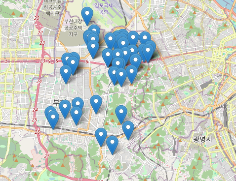

e-음 스마트 경로당 지도
위치 정보를 통해 나에게 어울리는 경로당을 찾으세요!
내 주변 스마트 경로당 찾기

전체 검색 결과
| 번호 | 소속지회 | 경로당명 | 주소 | 전화번호 |
|---|---|---|---|---|
| 1 | 오정구 | 강정경로당 | 오정구 고강로 154번길 47 | 032-683-9290 |
| 2 | 원미구 | 펠리스카운티경로당 | 원미구 중동로 108 | 032-663-8580 |
| 3 | 원미구 | 구지경로당 | 원미구 부일로 262 | 032-326-3575 |
| 4 | 소사구 | 고강경로당 | 소사구 경인로 92번길 36 | 032-344-0203 |
| 5 | 부천시경로회 | 부천경로당 | 원미구 조마루로 294번길 45 | |
| 6 | 소사구 | 소사경로당 | 소사구 소사로142번길 75-12 | |
| 7 | 원미구 | 상동경로당 | 원미구 중동 777번지 35 | |
| 8 | 소사구 | 삼정경로당 | 소사구 경인로 433, 3층 | |
| 9 | 소사구 | 약대동경로당 | 소사구 신흥로 51번길 20 | |
| 10 | 소사구 | 어린이공원경로당 | 소사구 소사로 290번길 45 |